指针是c语言的精髓，本节介绍指针相关内容。
内存和地址
由于C语言是比较底层的语言，可以直接操作内存，而指针正是操作内存的利器。我们都知道 RAM 可以抽象为如下标有数字的单元格：
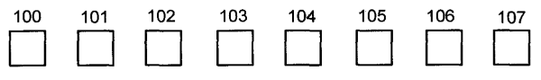
其中每个位置为一个字节（byte），如果要表示更大的值，那么就会将多个字节合在一起。另一个需要注意的地方是边界对齐，在要求对齐的机器上，整型值存储的起始位置只能在特定的位置，通常是2或者4的倍数。关于内存我们需要注意以下两点：
- 内存的每个位置由一个独一无二的地址标识。
- 内存的每个位置都包含一个值。
比如下图所示：
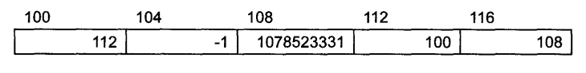
每个地址都有值，为了表示整数用了4个地址。如果都有地址引用肯定不方便，要是能用名字引用就好了，就行平时用人名标识某人一样，比用身份证号码方便多了。
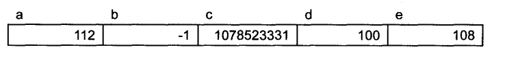
记住通过变量关联地址是编译器提供的支持，硬件仍然用地址访问内存。
值和类型
对于平时使用的各种变量在内存里面都是一串串 0 1 数字，那么我们怎么判断它的类型呢，其实关键是我们怎么解析和看待它，例如以下内存数据就存在不同的解释：
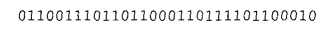
可能的数据类型如下：
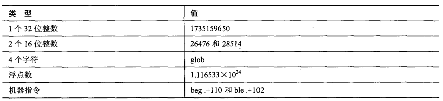
指针变量的内容
针对如下声明：
int a=112,b=-1;
float c=3.14;
int *d=&a;
float *e=&c;其内存分布如图所示：
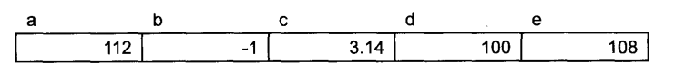
其中 d 和 e 的值比较特殊，刚好是 a 和 c 的地址。
间接访问操作符
从上面看出，由于指针变量的内容是其他变量的地址，那么我们是不是可以通过指针变量访问和操作其他变量了呢？答案是肯定的，这个访问过程叫做间接访问或者解引用指针，用单目操作符 * 表示。指针变量和其他变量的关系如下图所示：
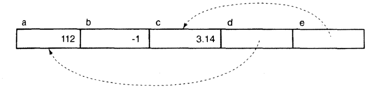
这里有两点需要注意：
- 由于每个变量的存储位置事先并不清楚，所以 d e 的值未明确给出。
- d 或 e 用的虚线，因为如果不对指针变量进行间接访问操作，
d或e中仅仅是地址值，要想访问地址对应的值，必须要间接访问操作符。
未初始化和非法的指针
有如下代码：
int *a
...
*a=12;以上语句的含义是，创建一个名为a的指针变量，并将12 赋值给a所指向的内存位置。但是请注意指针变量和其他变量并无区别，如果该指针变量是今天的，则初始化为0，但是变量是自动的，那么根本不会初始化，其值为垃圾值，这种情况下往往会造成“内存错误”、“保护性异常”等，更为严重的是如果这个地址恰巧是合法地址，这可能会引入及其隐蔽的bug。
NULL 指针
正是由于上面提到的未初始化指针的危害，标准便定义了 NULL 指针，表明指针未初始化。NULL指针十分有用，比如某个方法正常运行便返回指向某个元素的指针，否则返回NULL指针。不过这儿NULL指针存在“一值多用”的风险，具有两层含义，一是有没有正常运行，二是返回结果。这在软件设计中是个风险，最好的做法是返回一个表明成功或失败的状态值，以及具体结果的值。
指针、间接访问和左值
涉及到指针的表达式能不能作为左值呢？其实可以简单判断，如果能够将右值的结果放到左值指定的位置，那么就可以为左值。
指针、间接访问和变量
请问如下语句的含义是什么？
*&a=25;让我们分析下，&a 是取变量a的地址，结果是一个指针常量，* 操作符代表访问操作数表示的地址，该地址就是变量a的地址，所以整个式子的意思就是将a赋值为25 与 a=25 等价。
指针常量
假设变量a存储于地址100，那么下面的语句作用是什么呢？
*100=25初看就是将变量a的内容赋值为25，不过语法上间接操作符只能作用于指针类型表达式，那么确实想将25存储于100地址怎么办呢？必须使用强类型转换：
*(int *)100=25;强制将正向转为指向整型的指针，这在语法上是合法的。不过平时极少这么使用，只有在需要通过内存地址访问某个特地位置时会出现。
指针的指针
int a=12;
int *b=&a;通过前面的介绍，我们已经很熟悉 b 是指针变量，指向变量a：
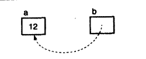
既然指针也是变量，那有没有可能另一个指针指向b呢？即 c=&b
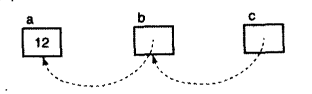
这似乎是合理的，不过c的类型是什么呢？显然它也是指针，指向的是什么呢？由于变量b是一个指向整型的指针，那么任何指向b的类型便是“指向整型的指针”的指针，即指针的指针。一般用 int **c 声明变量c，表达式 **c 的类型是int，下面列举了一些表达式：
int a=12;
int *b=&a;
int **c=&b;我们来分析 int **c ，首先 * 具有右结合性，我们必须由里向外逐层求值，*c访问的是c指向的位置，即变量b，第二个间接访问符访问变量b指向的地址即a。对应多级指针，我们只需要逐层分析即可。
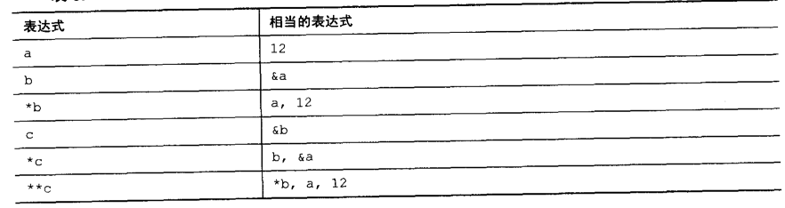
指针表达式
我们通过以下语句了解指针表达式的各种情况：
char ch='a';
char *p=&ch;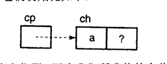
后续使用表格区分其作为左值和右值的情况。
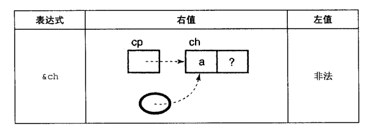
这里注意 &ch 不能作为左值，因为其结果为某个地址值，但是无法知道位于何处，不能表示内存特定位置，所以不合法。
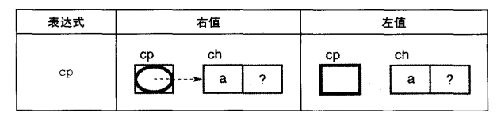
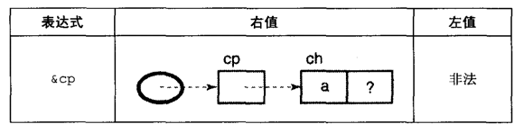
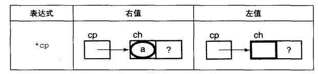
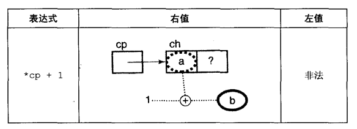
这儿注意 * 的优先级高于 + 。
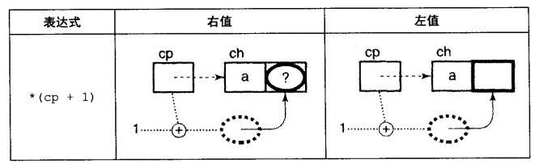
!(p13)(p13.png)
!(p14)(p14.png)
由于++ 和–操作符使用频繁，有必要掌握其过程，首先++ 操作符是先对cp增加，再返回增加后的结果，而-- 操作符是先返回cp的拷贝，再增加cp的值。
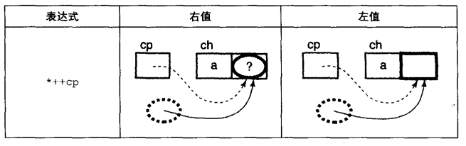
这里，间接访问操作符作用于增值后的指针拷贝上。
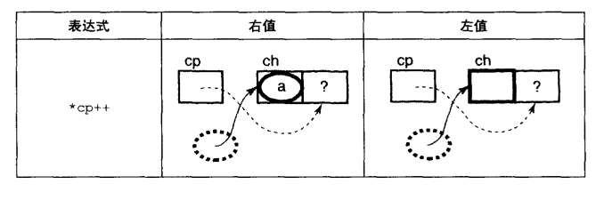
由于++操作符高于*，这里涉及到3个步骤：
- ++操作符产生cp的拷贝。
- ++操作符增加cp的值。
- 在cp的拷贝上执行间接访问操作。
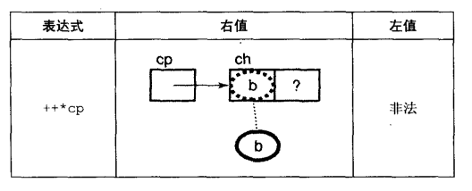
由于++ 和 * 结合性都是从右往左，先执行间接访问操作，再增加cp指向的位置的值。
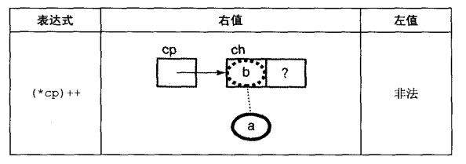
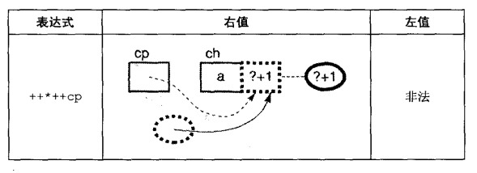
其执行步骤为：
- 移动cp指针
- 取cp对应的值
- 增加cp的值
由于a 后面的值未知，故用问号表示。
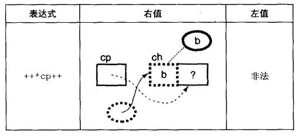
实例
从字符串数组中查找字符：
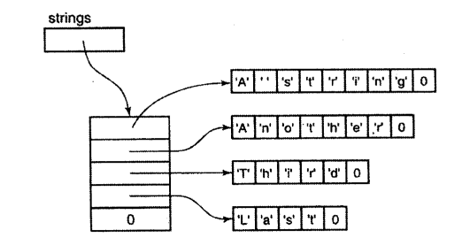
版本1：
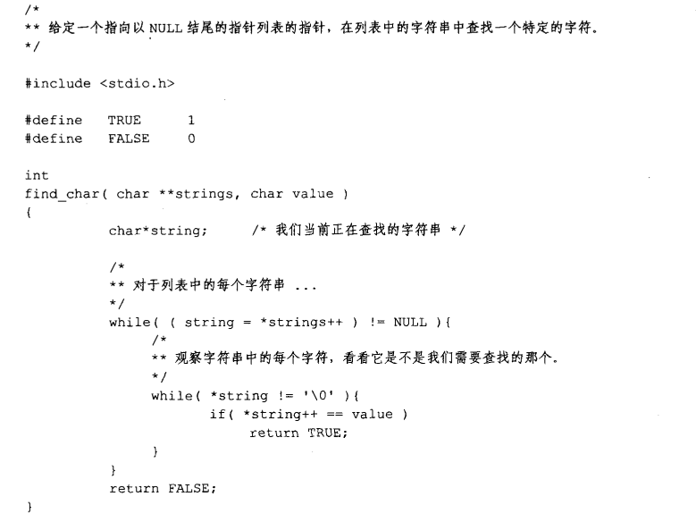
版本2：
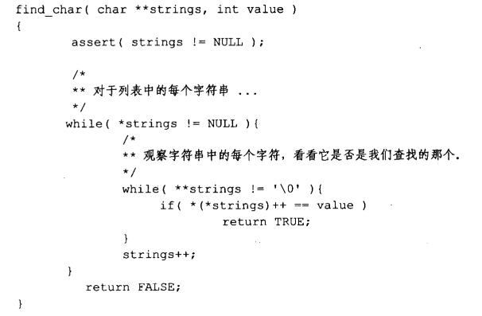
版本1和2的区别是，版本而由于有副作用，会修改当前字符串字符的指针值，所以只能使用一次。
指针运算
指针值可以执行有限的算术运算，指针会根据对应的类型调整。指针运算只有作用于数组才是可以预测的，如果指针指向同一数组元素，它们之间可以相加减。
任何指针可以比较，测试其相等或不相等。
如果两个指针指向同一数组元素，它们可以执行 < <= > >= 运算.
警告
- 错误对未初始化指针变量解引用
- 错误对NULL指针解引用
- 向函数错误传递NULL指针
- 未检测到指针表达式的错误，导致不可预测结果
- 对一个指针加减运算，使它指向数组第一个元素以前的内存位置
编程提示总结
- 一个值只有一种意思
- 如果指针不指向任何有意义的东西，把它设置为NULL